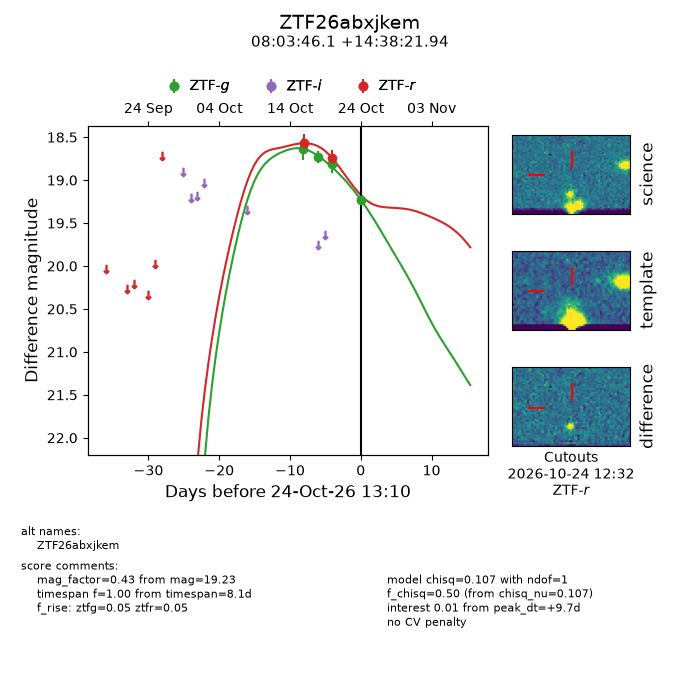
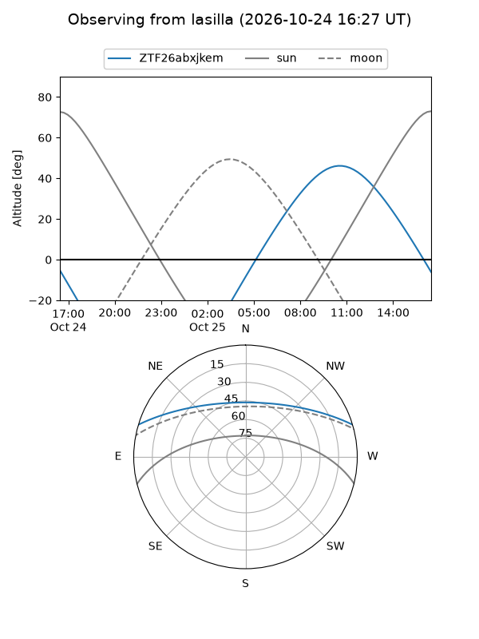
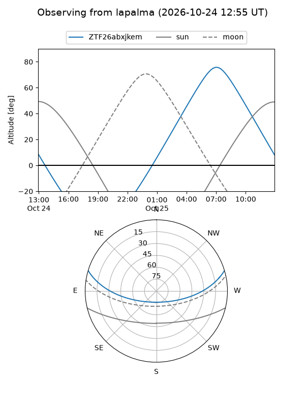
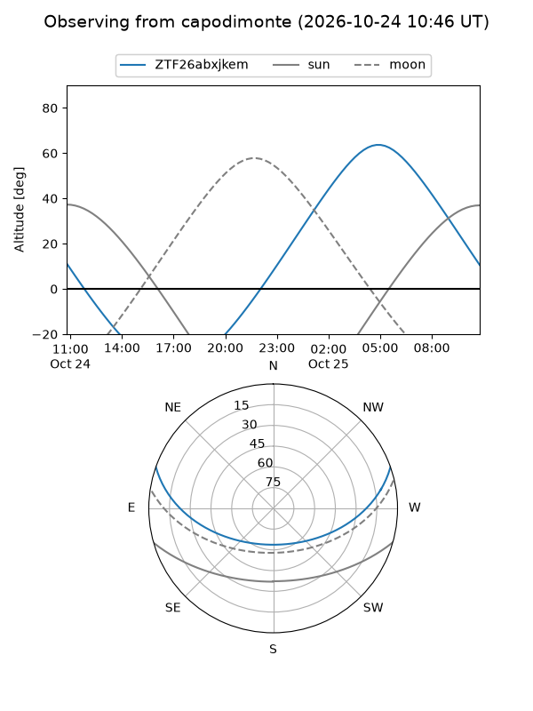
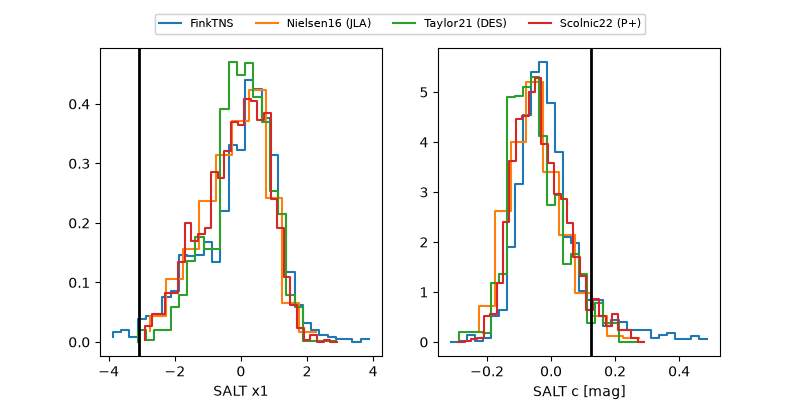

ZTF26abxjkem
Target ZTF26abxjkem at 2026-10-24 13:12
Aliases and brokers:
FINK-ZTF: ztf.fink-portal.org/ZTF26abxjkem
Lasair-ZTF: lasair-ztf.lsst.ac.uk/objects/ZTF26abxjkem
ALeRCE-ZTF: alerce.online/object/ZTF26abxjkem
Direct TNS query: direct search
alt names
ZTF26abxjkem (ztf,fink_ztf)
Coordinates:
equatorial (ra, dec) = 120.9422,+14.63943
equatorial (HMS+DMS) = 08:03:46.13,+14:38:21.94
galactic (l, b) = (207.4670,+22.48975)
Flags:
peak dt: +9.7
Photometry:
last ztfg=19.23, ztfr=18.74
4 ztfg, 2 ztfr detections
Lightcurve

Visibility



Additional plots
